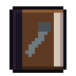

Guides / 08

Memories
The rare books, the depot shelf and the seven playable stories.
Around the city there are rare books that hold the last days of those who came before. Each one is a memory: a playable story, with a beginning, middle and end, and an outfit as a reward.
Where to find them
The books (Memory: …) are legendary and show up very rarely in the furniture inside places: only by going in, never through the door. Each memory comes from one kind of place:
- Old Jorge: houses
- The night shift: health places
- The crow's voice: electronics stores
- Thursday duty: police stations
- The vault: military bunkers
Once you've read a book, you won't find another one like it. If you find a duplicate, it becomes 3 stamps.
Playing
- In the backpack, tap the book and then Put on the shelf.
- Go to an outpost or tent and enter the radio vault.
- Open the SHELF OF MEMORIES, tap the spine and then PLAY. The session ends so the memory can begin.
In a memory you play as someone else, with their kit; your character is kept safe and nothing that happens there touches them. If you fall before the end, the memory has failed: restart FROM HERE or FROM THE START. The shelf keeps your kill record.
The seven memories
- The last delivery: the mail carrier on the night of the storm. Mail carrier outfit.
- Old Jorge: the doorman who locked up the building. Doorman outfit.
- The night shift: nurse Lúcia on the last shift in the ER. Nurse outfit.
- The crow's voice: radio host Rosa, who stayed on the air. Radio host headset, and the radio's phrase of the day is signed by her from then on.
- Thursday duty: Officer Ramos holding the police station. Police uniform.
- The vault: Private Nunes going down the bunker floor by floor. Military uniform.
- The crow: just flying and reading. It appears on the shelf after the other six have been played.
Guias / 08
Memórias
Os livros raros, a estante do depósito e as sete histórias jogáveis.
Pela cidade há livros raros que guardam os últimos dias de quem veio antes. Cada um é uma memória: uma história jogável, com começo, meio e fim, e uma roupa de recompensa.
Onde achar
Os livros (Memória: …) são lendários e aparecem muito raramente nos móveis de dentro dos lugares: só entrando, nunca pela porta. Cada memória sai de um tipo de lugar:
- Seu Jorge: casas
- O plantão: lugares de saúde
- A voz do corvo: lojas de eletrônicos
- Plantão de quinta: delegacias
- O cofre: bunkers militares
Quem já leu um livro não acha outro igual. Se achar repetido, ele vira 3 selos.
Jogar
- Na mochila, toque no livro e em Pôr na estante.
- Vá a um posto avançado ou barraca e entre no depósito do rádio.
- Abra a ESTANTE DE MEMÓRIAS, toque na lombada e em JOGAR. A sessão é encerrada para a memória começar.
Na memória você joga com outra pessoa, com o kit dela; o seu personagem fica guardado e nada do que acontece lá mexe nele. Se cair antes do fim, a memória falhou: recomece DESTE PONTO ou DO COMEÇO. A estante guarda o seu recorde de abates.
As sete memórias
- A última entrega: o carteiro na noite da tempestade. Roupa de Carteiro.
- Seu Jorge: o porteiro que fechou o prédio. Roupa de Porteiro.
- O plantão: a enfermeira Lúcia no último plantão do pronto-socorro. Roupa de Enfermeira.
- A voz do corvo: a radialista Rosa, que não saiu do ar. Fone de radialista, e a frase do dia da rádio passa a ser assinada por ela.
- Plantão de quinta: o soldado Ramos segurando a delegacia. Farda de Policial.
- O cofre: o soldado Nunes descendo o bunker andar por andar. Farda Militar.
- O corvo: só voar e ler. Aparece na estante depois que as outras seis forem jogadas.
Guías / 08
Memorias
Los libros raros, la estantería del depósito y las siete historias jugables.
Por la ciudad hay libros raros que guardan los últimos días de quienes vinieron antes. Cada uno es una memoria: una historia jugable, con principio, desarrollo y final, y una prenda de recompensa.
Dónde encontrarlas
Los libros (Memoria: …) son legendarios y aparecen muy raramente en los muebles de adentro de los lugares: solo entrando, nunca por la puerta. Cada memoria sale de un tipo de lugar:
- Don Jorge: casas
- La guardia: lugares de salud
- La voz del cuervo: tiendas de electrónica
- Guardia del jueves: comisarías
- La bóveda: búnkeres militares
Quien ya leyó un libro no encuentra otro igual. Si encuentras uno repetido, se convierte en 3 sellos.
Jugar
- En la mochila, toca el libro y luego Poner en la estantería.
- Ve a un puesto avanzado o tienda de campaña y entra en el depósito de la radio.
- Abre la ESTANTE DE MEMORIAS, toca el lomo y luego JUGAR. La sesión se termina para que empiece la memoria.
En la memoria juegas con otra persona, con su kit; tu personaje queda guardado y nada de lo que pasa ahí lo afecta. Si caes antes del final, la memoria falló: vuelve a empezar DESDE AQUÍ o DESDE EL INICIO. La estante guarda tu récord de abatidos.
Las siete memorias
- La última entrega: el cartero en la noche de la tormenta. Uniforme del Cartero.
- Don Jorge: el portero que cerró el edificio. Ropa de Portero.
- La guardia: la enfermera Lúcia en su última guardia de urgencias. Ropa de Enfermera.
- La voz del cuervo: la locutora Rosa, que no salió del aire. Auriculares de locutora, y la frase del día de la radio pasa a llevar su firma.
- Guardia del jueves: el soldado Ramos defendiendo la comisaría. Uniforme de Policía.
- La bóveda: el soldado Nunes bajando el búnker piso por piso. Uniforme Militar.
- El cuervo: solo volar y leer. Aparece en la estante después de jugar las otras seis.